Cà phê ngon không nên vội.Good coffee shouldn't be rushed.
Cold brew đơn nguồn, ủ lạnh 18 giờ, đóng chai để bạn uống ngay tại bàn làm việc. Không cần pha. Không cần chờ.
Single-origin cold brew, steeped cold for 18 hours and bottled so you can drink it right at your desk. No brewing. No waiting.
Sắp ra mắt tại Thảo Điền, TP.HCM. Cửa hàng, website và chai cold brew mở cùng một ngày.
Opening soon in Thảo Điền, Ho Chi Minh City. The store, the website and the bottled cold brew all launch on the same day.
Nhận thông báo khai trươngGet the launch notice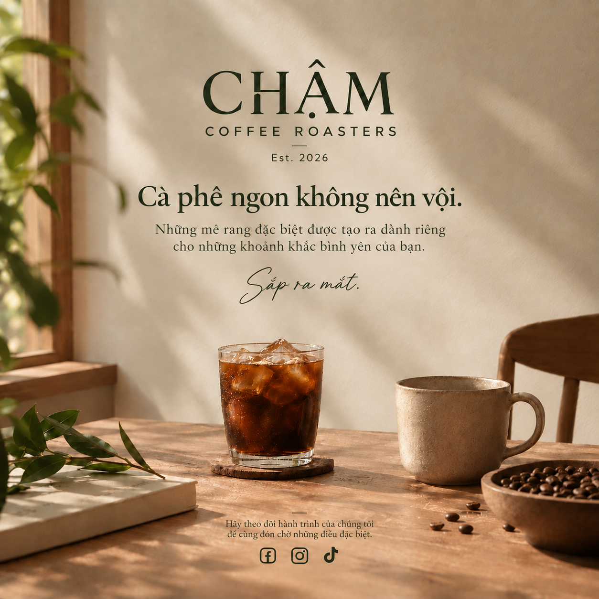
Cold brew không phải cà phê đá.Cold brew is not iced coffee.
Cà phê đá được pha nóng rồi làm lạnh. Cold brew ngâm cà phê xay trong nước lạnh nhiều giờ, rồi lọc. Cách làm chậm cho vị êm, ít gắt. Không loại nào "tốt hơn". Chúng chỉ là hai cách uống cà phê lạnh.
Iced coffee is brewed hot, then cooled. Cold brew steeps ground coffee in cold water for hours, then strains it. The slow method gives a smooth, less harsh taste. Neither is "better". They are just two ways to enjoy coffee cold.
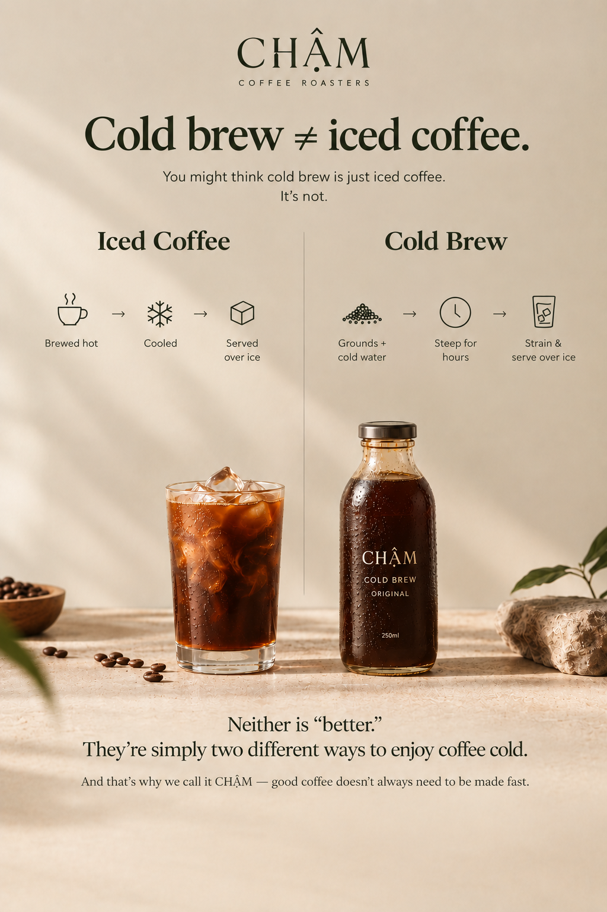
Chai đầu tiên của CHẬM.CHẬM's first bottles.
Chai thủy tinh 250ml. Giữ được 21 ngày trong tủ lạnh khi chưa mở. Cold brew không bảo quản ở nhiệt độ thường.
250ml glass bottles. They keep for 21 days in the fridge, unopened. Cold brew is not shelf-stable.
Giá niêm yết dự kiến cho ngày khai trương. Đơn hàng chỉ mở khi CHẬM chính thức ra mắt.
Planned prices for opening day. Orders only open once CHẬM officially launches.
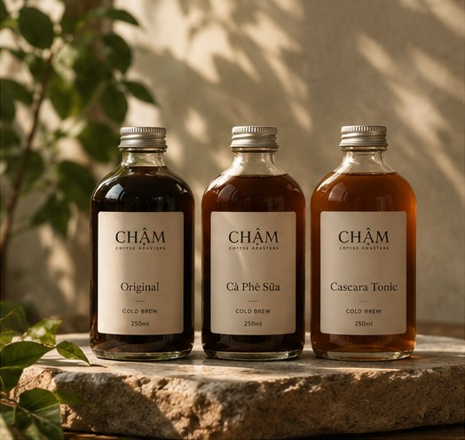
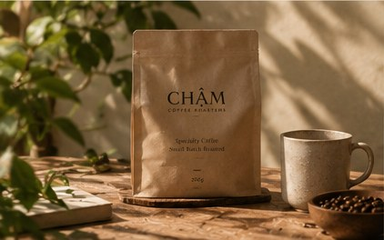
Vì sao tên là CHẬM?Why is it called CHẬM?
Cold brew được ủ chậm, không ép nhanh dưới áp suất. Chúng tôi cũng nghĩ cà phê nên được uống chậm như vậy. Hai người sáng lập, Minh (barista tám năm, Q-grader) và Hương (sáu năm trong chuỗi cung ứng nông sản), mất 14 tháng để làm ra công thức này.
"Chậm" means slow in Vietnamese. Cold brew is steeped slowly, not forced out under pressure, and we think coffee should be enjoyed the same way. Our two founders, Minh (eight years as a barista, a certified Q-grader) and Hương (six years in agricultural supply chain), spent 14 months developing this recipe.
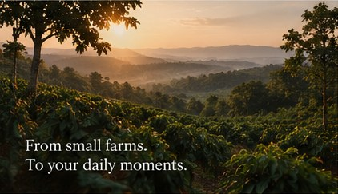
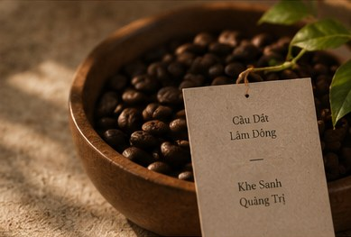
Từ nông trại đến chaiFrom farm to bottle
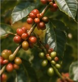
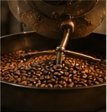
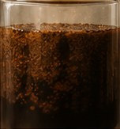
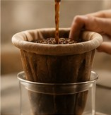
Đơn nguồnSingle origin
Hạt đến từ hai nông trại có tên: Cầu Đất (Lâm Đồng) và Khe Sanh (Quảng Trị).
Beans come from two named farms: Cầu Đất (Lâm Đồng) and Khe Sanh (Quảng Trị).
Ủ 18 giờ18-hour steep
Cà phê xay ngâm trong nước lạnh 18 giờ. Bản Original không thêm đường.
Ground coffee steeps in cold water for 18 hours. The Original has no added sugar.
Rang mỗi tuầnRoasted weekly
Rang tại xưởng nhỏ ở Thủ Đức, cho chai mới mỗi tuần.
Roasted at our small roastery in Thủ Đức, for fresh bottles every week.
Giao nội thành TP.HCM trong ngày. Tỉnh thành khác 2–4 ngày. Miễn phí vận chuyển cho đơn từ 350.000đ.
Same-day delivery within Ho Chi Minh City. 2–4 days elsewhere in Vietnam. Free shipping on orders over 350,000đ.
Giúp chúng tôi trước ngày mở cửa.Help us before we open.
Chúng tôi là nhóm sinh viên đang tìm hiểu thói quen uống cà phê của người đi làm ở TP.HCM. Khảo sát mất khoảng 6 phút. Bạn không cần cho tên hay số điện thoại, và có thể dừng bất cứ lúc nào. Câu trả lời chỉ dùng cho bài tập này và sẽ được xóa sau khi chấm điểm.
We are a group of students researching the coffee habits of office workers in Ho Chi Minh City. The survey takes about 6 minutes. You don't need to give your name or phone number, and you can stop at any time. Your answers are used only for this assignment and deleted after it is assessed.
Làm khảo sát (mở tab mới)Take the survey (opens in a new tab)Biểu mẫu hiện bằng tiếng Anh.
The survey form is in English.
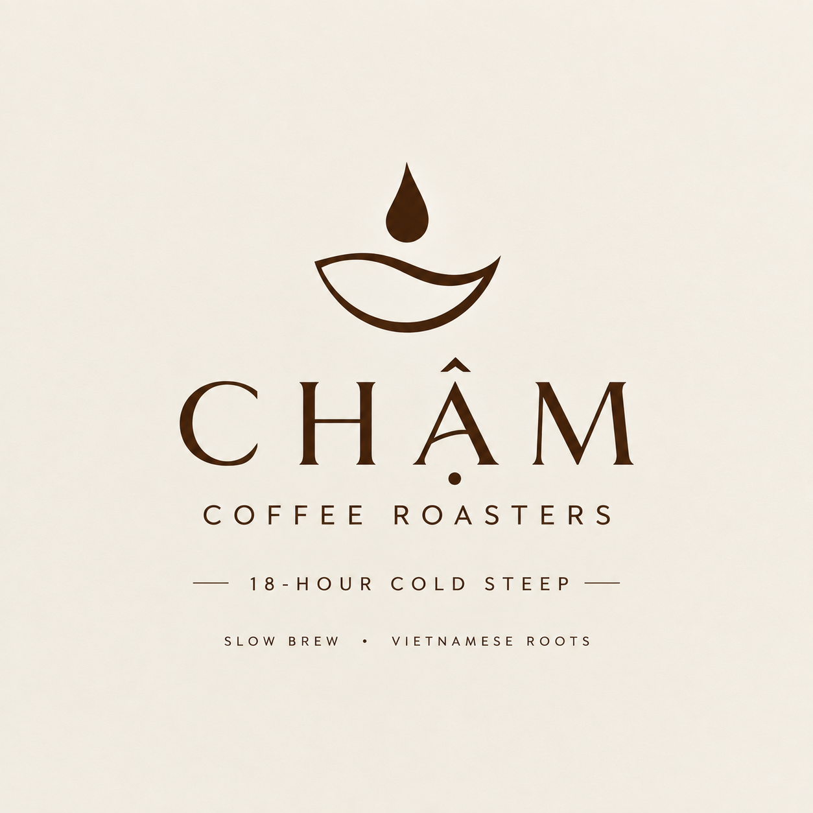
Biết ngay khi CHẬM mở cửa.Know when CHẬM opens.
Để lại email. Chúng tôi sẽ gửi thông báo khai trương, kèm ngày giờ và địa chỉ cửa hàng, cùng vài cập nhật trong chiến dịch.
Leave your email. We will send the launch notice, with the date, time and store address, plus a few updates during the campaign.